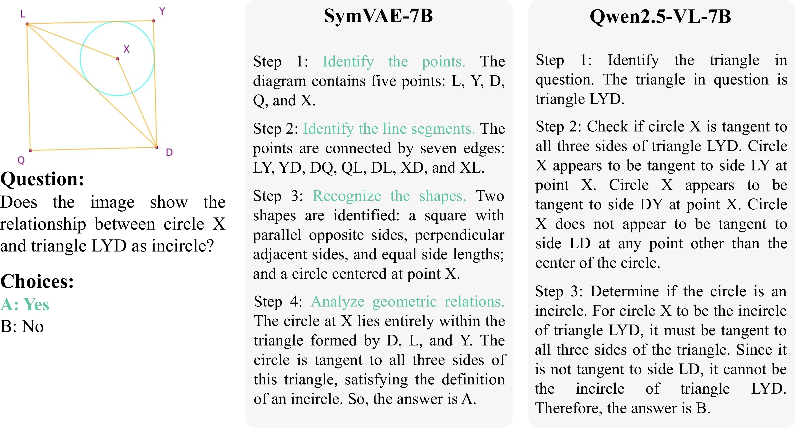

CVPR 2026 · POSTER PRESENTATION
Hierarchical Process Reward Models
are Symbolic Vision Learners
SymVAE — a symbolic visual auto-encoder
Shan Zhang1,5,†,*, Aotian Chen2,*, Kai Zou3, Jindong Gu4, Yuan Xue2,‡, Anton van den Hengel1
1Adelaide AIML · 2Ohio State University · 3NetMind.ai · 4University of Oxford · 5Data61 & CSIRO
What if the latent space itself were symbolic? [CVPR 2026]
CURRENT MLLM · VISUAL REPRESENTATION FLOW
"Why not use the structural features themselves as the visual representation? — that's SymVAE."

SymVAE · Framework
SymHPR encoder → rendering engine → visual reward closes the loop via GRPO.

ENCODER
SymHPR
A VLM refined via hierarchical process rewards — parses a diagram into a structured logic form (points, lines, shapes, relations).
DECODER
Rendering Engine
A deterministic data engine (not a neural net) that renders logic forms back into diagrams.
TRAINING
GRPO + Visual Reward
Final SymVAE trained via RL — visual reward from the rendered reconstruction. The engine is non-differentiable, so we use scalar rewards.
Experiment results
98.2%
MSE reduction
Diagram reconstruction fidelity — symbolic latent clearly beats pixel / code baselines.
+0.6%
over GPT-4o
On ChartMimic — at just 7B params. 5× fewer training samples than the specialist parser.
+13% / +3%
MathGlance / MathVerse
Consistent improvements on downstream math reasoning after fine-tuning on both perception and reasoning.

Reconstruction: VQ-GAN · PyParser · SymParser · input

Qwen2.5-VL-7B · GPT-4o · SymVAE-7B (ours) · GT (last col)
BEYOND THE NUMBERS
Two emergent properties

Cross-domain generalization
Primitives learned on plane geometry transfer to electric circuits and chemical structures — without domain-specific retraining.

Cross-lingual translation
Logic forms auto-translate into fluent CoT — following our point → line → shape hierarchy. Qwen2.5-VL-7B starts from global shapes, diverging from this structure.